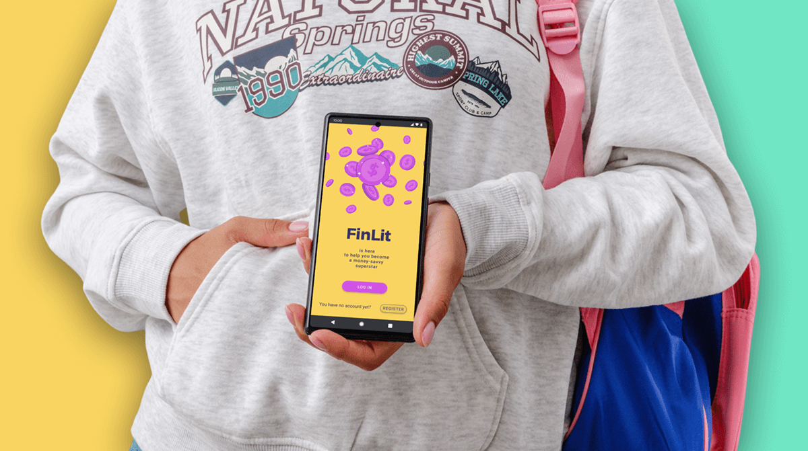
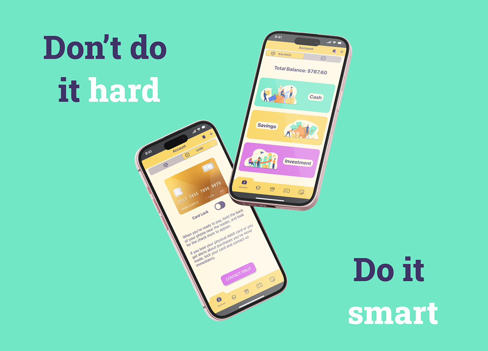
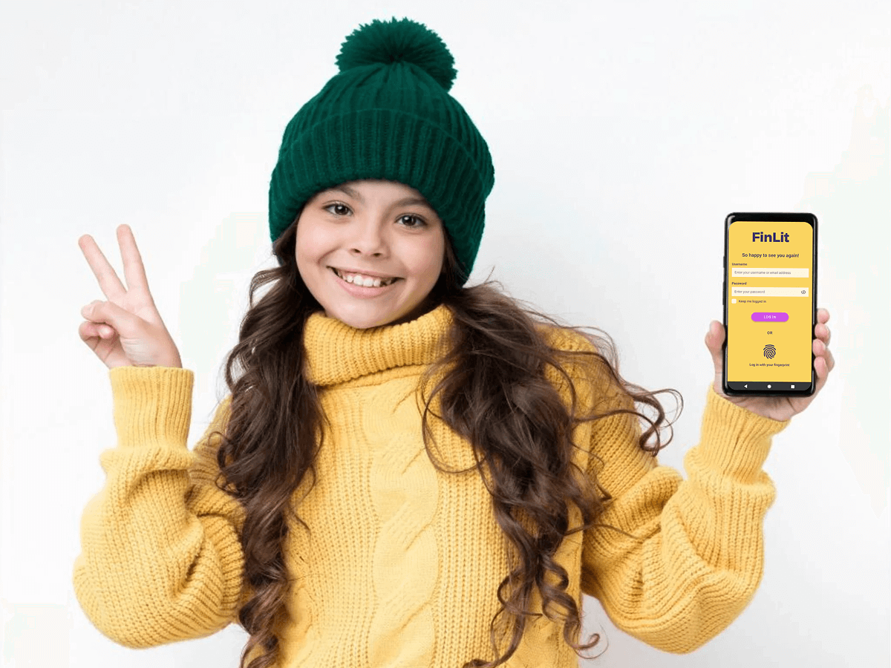
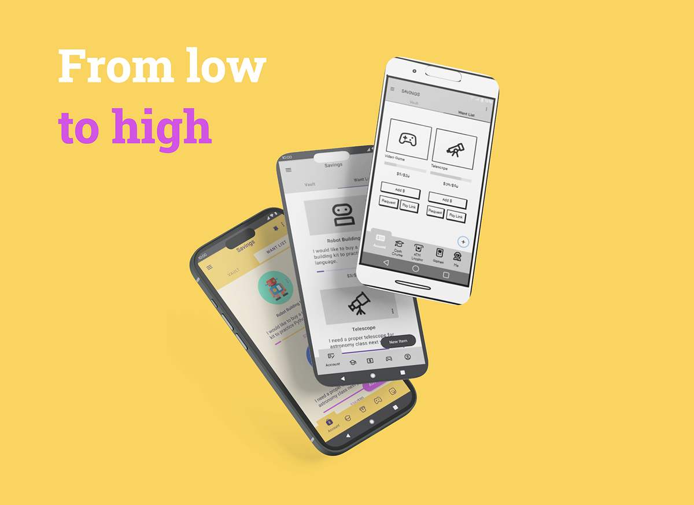
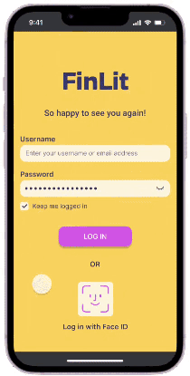
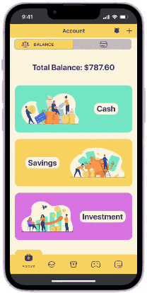
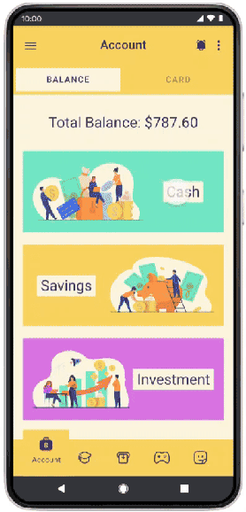
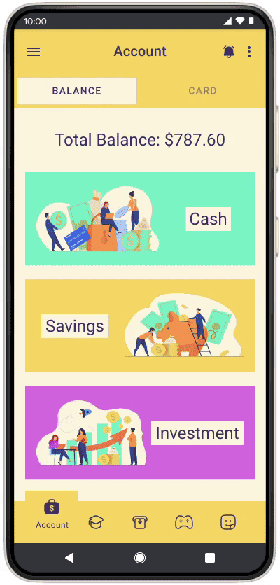
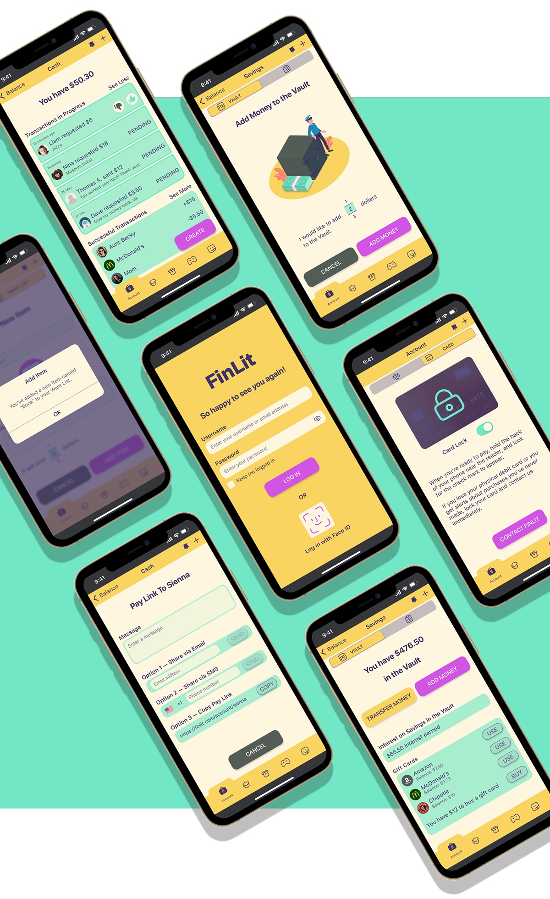

Cassette

DESIGNER
Nikolett Muller
ROLE
Competitive Analysis, UX Design, UI Design
TOOLS
Figma, Balsamiq, Canva, Unsplash, Mockuuups Studio, EzGif, Animately
Explore case study
IDEA
Financial confidence
The idea for FinLit started with my nephew. What he enjoyed most was not just receiving money, but the autonomy of spending it himself. Having his own debit card felt empowering and gave him a sense of independence.
But while the technology gave him freedom, it didn’t encourage him to think beyond the moment. Spending felt exciting, saving felt distant. This contrast became the foundation of this project. FinLit is my attempt to design a system where children can enjoy control over their money while gradually learning how to shape their future with it.
OBJECTIVE
Stigma on money talk
Talking about money is often considered uncomfortable or even taboo within households. As a result, children are frequently excluded from financial discussions, even though they are directly affected by those decisions. By introducing a structured yet playful digital environment, FinLit aims to reduce this awkwardness and create a shared space where children can engage with money in a guided and transparent way.
The objective is not simply to teach financial concepts, but to help families build confidence around money while supporting young users in becoming thoughtful decision makers over time.
CONTEXT
The competition
FinLit has two main competitors: Greenlight and Revolut <18. Both are financial services aimed at younger users. They provide debit cards, basic banking functions such as spending and saving, and parental control features. However, their focus differs slightly. Greenlight is more specifically tailored toward families and emphasizes financial education, while Revolut <18 offers a broader range of financial services — such as investing and currency exchange — with less emphasis on structured learning.
Our solution
FinLit focuses on the most relevant money experiences children and teenagers are likely to face. Instead of offering a wide range of advanced banking tools, the app prioritizes practical situations such as saving, earning money through chores, making payments, withdrawing cash, and understanding how money grows over time.
Each concept is directly connected to real interaction. For example, when users learn about ATM fees, they are guided to use the in-app ATM locator to find their own bank and avoid unnecessary charges. Rather than separating theory from action, the app reinforces learning through immediate practice.
Parents maintain control over all transactions to ensure safety and supervision. At the same time, FinLit encourages financial interaction beyond the nuclear family, allowing children to engage with relatives, friends, or neighbors. This expands real world practice while keeping oversight in place.

USERS
It takes a village to raise a child
FinLit is designed as a small financial ecosystem rather than a single-user product. The primary users are children and teenagers who are eager to gain financial literacy while enjoying a sense of independence. The app provides them with a structured space to explore money management in a way that feels empowering rather than restrictive.
Secondary and tertiary users extend beyond the individual child. Parents or guardians maintain oversight and control, ensuring safety while gradually allowing autonomy to grow. At the same time, extended family members, friends, and neighbors can interact with the account holder through transactions, even if they do not have their own account. This wider circle reinforces the idea that financial learning happens within a community, not in isolation.

FEATURES
Iteration schedule
Iteration 1
- Balance Checking
- Expense Tracking
- Peer-to-Peer Payment
- Tap to Pay
- In-App Notifications
- Savings
The first iteration focuses on essential money management behaviors. These features build the foundation for autonomy, enabling users to monitor, transfer, and manage their funds with confidence.
Iteration 2
- Learning Center (Cash Course)
- Games
- ATM Locator
The second phase expands beyond transactions. It introduces structured learning and interactive reinforcement to deepen financial understanding.
Iteration 3
- Access to the Stock Market
- Age-Based Account Structure
The third phase introduces long-term financial thinking through access to the stock market. To reflect developmental differences, the structure adapts based on age. Users over 13 can make their own investment decisions within the app, while parents must review and approve each transaction before execution. This supports growing autonomy while maintaining safety and accountability.
For users under 13, investments follow a custodial model. Transactions are executed by the parent on behalf of the child, while decisions can still be discussed together. Although legal responsibility remains with the adult, the learning process continues, reinforcing financial awareness and shared responsibility from an early age.

USER TESTING
Prototype of the first MVP
Before finalizing the first MVP, different layout variations were explored through A/B comparisons to evaluate clarity, visual hierarchy, and ease of interaction. Special attention was given to the color scheme and the placement of primary and secondary buttons, as these elements directly influenced user focus and decision making.
The interactive prototype was tested with both Android and iOS users to confirm that each version delivered behavior consistent with its platform. The goal was to ensure familiarity and alignment with user expectations. For example, iOS authentication followed Face ID patterns, while the Android version used fingerprint verification. These adjustments helped the app feel native to each system while maintaining a consistent overall identity.
The main MVP features presented below were tested and refined during this process.
Notifications
“As a bank client, I would like to get notifications about my purchases/money deposits/withdrawals so that I am always informed about my balance.”


P2P Payment
“As a member of a friend group, I would like to accept requests for splitting expenses so I can reimburse my friends.”
Pay Link
“As a neighbor helper, I would like to share a pay link with people I worked for so I can avoid having too much physical cash.”


Want List
“As a child, I would like to create a want list where I can name future purchases so I can reallocate my own savings/accept donations towards my goals.”
FINAL INTERFACE
Refined through iteration
These screens represent the final outcome of the design process, where early ideas were shaped, tested, and refined into a structured and intuitive financial learning environment.

REFLECTIONS
Challenges
One of the main challenges was defining a visual mood that could resonate with both younger children and teenagers. Designing for a wide age range required balancing playfulness with credibility. A color palette that feels engaging for a 9 year old can easily feel too childish for a 15 year old, while a more minimal approach risks losing warmth and approachability. This forced me to think more intentionally about hierarchy, spacing, and color restraint. Instead of relying heavily on decorative elements or illustrations, I focused on creating a clean structure that feels friendly without being overly playful.
Another challenge was designing for both iOS and Android, as each platform follows different design guidelines. For example, iOS generally uses softer, more rounded component edges, while Android tends to feel more structured and block-based. Since I initially designed the interface with iOS in mind, I had to make subtle but important adjustments for Android. These changes ensured that the app would feel familiar and natural to Android users while maintaining the overall visual identity of FinLit.
Phase 2.0
In the next iteration cycle, I would introduce the Learning Center (Cash Course) and interactive games to deepen financial understanding through guided and hands-on learning. While the current version focuses on core financial behaviors, expanding these features would strengthen the educational experience.